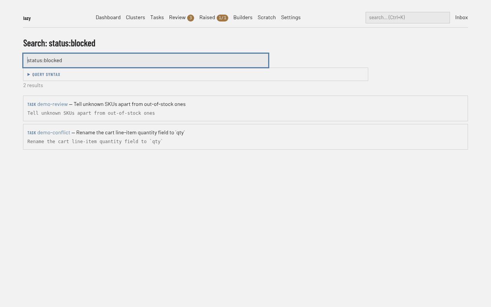

Searching tasks
lazy search looks across tasks, prompts, turns, commits, notes, raised items,
captured conversations, and shared memory records. The builder and task agents
reach the same engine through the lazy_search MCP tool, the dashboard's search
page and command palette reach it too, and so does the find page in Lazy Teams —
every surface shares one parser, one evaluator, and one fuzzy content loader,
so the same query returns the same results wherever you type it.
lazy search --help is the authoritative reference for flags; this page explains
the query language and the behavior that isn't obvious from a flag list.
Searching in a browser

The query language on this page is the same one the browser surfaces take, and they say so where you type it. The dashboard's search page and the Lazy Teams find page both carry a folded Query syntax panel beside the search box: every field and operator with what it matches, the matching rules that a field list cannot show, and worked examples that are links — clicking one runs it.
A query the engine will not read is not a broken search, and these pages do not
report it as one. The message you get back is the one lazy search would give you:
code:spike is told that the field is now task:, an unquoted multi-word tag is
told to quote it. On Lazy Teams the syntax panel opens itself when that happens,
since the language is what you are now looking at.
Three matching modes
| Mode | When it is used | What it matches |
|---|---|---|
| Structured | The query contains a boolean operator, a field: term, or a bare #tag |
Parsed query, evaluated per field |
| Regex | Plain text with none of the above | Case-insensitive regex over content |
| Fuzzy | --fuzzy / fuzzy=true |
Typo-tolerant match; never parses field: syntax |
Mode selection is automatic — there is no flag to force structured search. Note
that --fuzzy bypasses the query language: lazy search 'tag:launch' --fuzzy
looks for the literal text tag:launch, not for tasks tagged launch.
When a regex query is refused
A pattern that isn't valid regex is not an error — it is searched for as literal
text, so lazy search '(unclosed' finds the characters you typed.
A pattern that is valid but takes pathologically long to evaluate (stacked
wildcards such as a*a*a*a*a* are the classic shape) is refused instead:
Invalid search pattern 'a*a*a*a*a*$': took too long to evaluate; try a simpler query.
This applies to every search surface — the CLI, agents' lazy_search, and the
web search and Conversations pages. Rewrite the query more specifically; the
refusal is quick and nothing else you are running is affected by it.
Quote the whole query
Always wrap the query in single quotes:
lazy search 'tag:launch AND status:blocked'
Two shell behaviors bite otherwise. # starts a comment in most shells, so an
unquoted #onboarding never reaches lazy. And an unquoted multi-word value is
split into separate argv entries before lazy sees it.
Query language
Boolean operators are case-sensitive (AND, not and). AND binds tighter
than OR. Two adjacent terms with no operator are an implicit AND.
AND Both conditions must match
OR Either condition matches
NOT Negation
(A OR B) AND C Parentheses group
Field filters:
task:<text> Task code CONTAINS this text (case-insensitive)
status:<value> Task status, exact (working, blocked, backlog, complete, abandoned, ...)
goal:<text> Task goal contains this text (case-insensitive)
tag:<value> Tasks carrying this tag, exact after normalization
#<value> Shorthand for tag:<value> (see Tags below)
in:tasks <text> Across tasks and all content attached to them
in:active <text> Within working, interrupted, or blocked tasks
in:backlog <text> Within backlog tasks
in:finished <text> Within accepted, closed, or rejected tasks
in:turns <text> Within turn content
in:commits <text> Within commit messages
in:comments <text> Within comments
in:raised <text> Within raised items (blocking and non-blocking alike)
in:followups <text> Alias for in:raised (an older spelling)
in:conversations <text> Within captured builder conversations
in:memories <text> Within shared memory records
in:scratch <text> Within captured builder scratch files
has:commits Task has commits
has:turns Task has turns
has:comments Task has comments
has:raised Task has raised items
has:followups Alias for has:raised
created:>YYYY-MM-DD Created after / before (also created:<)
updated:>YYYY-MM-DD Last updated after / before (also updated:<)
The dashboard's search page carries this same list inline, under Query syntax — both surfaces render one shared description, so they cannot drift.
Substring or exact?
task:, goal: and every in: scope are case-insensitive substring
matches. task:spike finds spike-caching, auth-spike and
do-spike-thing alike — it is not anchored to the start of the code, and it does
not require the whole code.
status: and tag: are exact. Both are closed sets (a status is one of a
fixed list; a tag is normalized on write), so a substring match there would
quietly widen the filter rather than help.
Matching a task code: task:
The field that matches a task code is task:. The spelling code: is not
accepted, and typing it tells you what to use instead:
$ lazy search 'code:spike'
Query error: code: was renamed to task: — use task:spike to match the task code
A bare code: followed by a space is ordinary prose, so lazy search 'exit code: 1' still searches for that text.
Tags
Tags are normalized on write and on query, identically: lowercased, with
every run of non-alphanumeric characters collapsed to a single hyphen and
leading/trailing hyphens stripped. All four of these find the task tagged
my-feature:
lazy search 'tag:my-feature'
lazy search 'tag:MY-FEATURE'
lazy search 'tag:My_Feature!' # punctuation collapses to a hyphen
lazy search 'tag:#my-feature' # a leading '#' is stripped
Normalization applies to one token. It does not join words across a space — see the multi-word caveat below.
A tag value that normalizes to nothing (tag:"!!!") is a parse error, not a
silent zero-result — the write side rejects the same input, so the query side
does too.
#name is the spelling lazy prints
lazy tag and lazy show print tags with a leading # ("Tags: #launch"), so
that spelling has to work when pasted back into a search. A bare #launch term
is a superset, not a redirect — it matches tag:launch or the literal text
#launch. That keeps #1234 issue references in commit messages findable.
lazy search '#launch' # tag 'launch', OR the text '#launch' anywhere
Quote a multi-word tag
This is the one real trap. tag: consumes a single token, and adjacent tokens
are an implicit AND:
lazy search 'tag:"My Feature Work"' # matches the tag 'my-feature-work'
lazy search 'tag:My Feature Work' # tag:my AND text "Feature" AND text "Work"
The second form is valid syntax that usually matches nothing. Lazy does not
guess between the two — tag:x some text is a legitimate query — so instead it
explains the empty result (below).
Empty tag results explain themselves
A structured, non-fuzzy tag query that returns nothing prints a hint naming what is actually missing, rather than a bare "No matches found":
$ lazy search 'tag:onbording'
No matches found.
No task is tagged #onbording — did you mean #onboarding?
Known tags: #infra #launch #onboarding
Tags are normalized to lowercase alphanumerics and hyphens. Quote a multi-word tag: tag:"My Feature Work"
Details worth knowing:
- Suggestions come from tags that actually exist, ranked by prefix/substring
relation first and edit distance second — the ranking that surfaces
my-feature-workwhen an unquoted multi-word tag queried onlymy. - If every queried tag exists, there is no hint: the empty result came from the rest of the query (a status, a date range, a text term), not the tag.
NOT tag:xnever triggers a hint — it says nothing about whetherxexists.- With
--json, the hint appears as a top-levelhintfield. The MCPlazy_searchtool returns the same field.
Searching by id
Paste an id as the whole query — a prefix of at least 6 characters, or the full id — and search lists every entity that id names, ahead of any text matches: tasks, raised items, comments, journal entries, review comments, turns, commits (by SHA), artifacts, system messages and builder conversations. Each hit links to where the entity lives (a comment to its place on the Comments tab, a turn to the Turns tab, a message to its page). An ambiguous prefix lists every match. Id search is skipped with --fuzzy. Only id-shaped queries pay for the lookup; ordinary text searches run exactly as before.
Result order
Search results come back in a deliberate order, the same one on every surface
that runs a search — the terminal, the MCP lazy_search tool, the dashboard's
search page and the command palette:
- Entity type first. Tasks rank above prompts, prompts above turns, turns above commits; comments, raised items, conversations, memory records and builder scratch files follow in that order. A task always outranks a better textual match of a lower tier.
- Then match strength within the tier. An exact hit outranks a hit that starts with your text, which outranks one that merely contains it. This is what makes the exact-code case work: type a task's exact code and that task is the first hit, ahead of every turn and commit that merely mention it.
- Then recency. Among equally strong hits of the same type, the most recently changed entity comes first.
- Full ties keep the engine's own order, which is stable.
Notes worth knowing:
- The order depends only on results the search already returned — ranking never
adds, drops or merges rows, so paging (
offset/limitonlazy_search, page size on the surfaces) always covers the same rows, ranked. - The strength comparison uses the query's literal text — including the value
of
task:andgoal:— and is case-insensitive. A query with no literal text at all (a purestatus:,tag:orhas:query) is ranked by type and recency only. - Fuzzy (typo-tolerant) results follow the same order. A typo'd query usually cannot be strength-ranked, so those hits are ordered by type and recency.
--followupsis an older spelling of--raised: one entity, two spellings, the same rows, in the same order.
From a hit to the thing it hit
Result excerpts are truncated (~500 chars over MCP) on purpose: search locates,
show reads. So a hit that lives inside a task's own list — a turn, commit,
comment or raised item — carries a locator you can hand straight to show.
CLI. Turn hits print as
turn #12in the TYPE column, solazy show <task>tells you which turn to look at without counting. With--json, each hit'scontextcarriesturn_seq(the turn number) andindex(its 0-based position).MCP. Each such hit carries
index, and turn hits also carryturnSequence. For turn, commit and comment hitsindexis the entity's position in the very listlazy_showpages over, so it works as anoffsetagainst that one section:lazy_search(query="reconciler") -> {type: "turn", index: 7, turnSequence: 8, ...} lazy_show(task_id, sections=["turns"], offset=7, limit=1) # that exact turn, in fullsections=["commits"]andsections=["comments"]work the same way.
index and turnSequence are deliberately separate. index is a pagination
offset; turnSequence is the turn's identity in rendered output. They coincide
only when a session's sequences start at 0 and skip nothing.
Raised-item hits are the exception: there is no raised_items value in
lazy_show's sections, and none is needed — lazy_show always returns every
raised item in full as raised_items, blocking and non-blocking alike, because a
task's raised items are its triage queue at review and the blocking ones gate
accept. So a raised hit's index is a position to read off in that array, not an
offset to page to. Asking for sections=["raised_items"] is a schema error, by
design.
Hits with no position in a per-task list — task, prompt, conversation, memory —
carry neither field, rather than a misleading index: 0.
Examples
lazy search 'auth' # regex, everywhere
lazy search 'in:tasks auth' # task content only
lazy search 'in:active auth' # active task content only
lazy search 'task:spike' # every task whose code contains "spike"
lazy search 'catchup' --fuzzy # typo-tolerant
lazy search 'status:blocked AND in:turns "reconciler"'
lazy search 'has:commits AND NOT in:commits "wip"'
lazy search 'created:>2026-02-15 AND status:working'
lazy search 'tag:onboarding'
lazy search '#onboarding' # the printed spelling
lazy search 'tag:"My Feature Work"'
lazy search 'tag:launch AND status:blocked'
lazy search 'in:memories "credentials"'
lazy search 'auth' --json # structured output
Related
- Reviewing tasks in Lazy Teams — the find page's sibling surfaces
- Shared memory — memory records and
in:memories